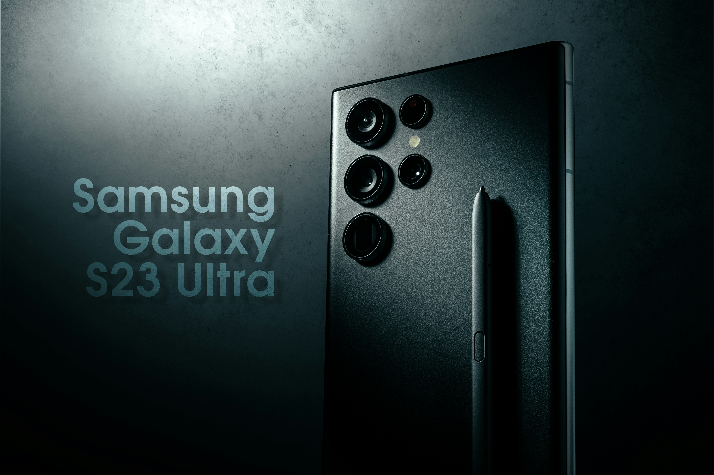

Become the ultimate photographer with Samsung AI
Look Latest Models and innovations



How to Select Samsung Products
- Phones
- Tablets
- Monitors
- Computing
- Mobile Accessories
- Apps & Services
SHOP
- Chat with us
- Product Support
- Order Support
- Your Account
- Contact Us
- Register your account
SUPPOR
- Offers
- Samsung Rewards
- Referral Program
- Education Offer Program
- Military Offers Program
- Employee Offers Program